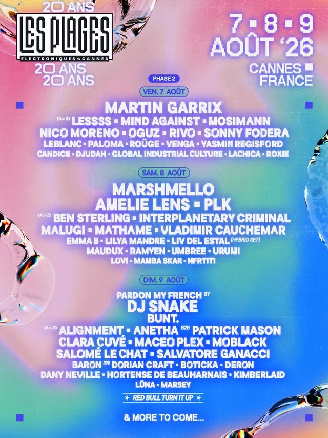

L'affiche des 20 ans · © Les Plages Électroniques
+70
artistes
5
scènes
7 → 9
août · Cannes
La playlist officielle #PE26 · © Les Plages Électroniques × Deezer
20 ans de fête électronique sur la Croisette de Cannes
Un festival qui installe ses scènes directement sur la plage du Palais des Festivals, face à la mer, en plein cœur de Cannes : voilà l'idée qui fait danser la Croisette depuis vingt ans. Pour son édition anniversaire, le rendez-vous voit les choses en grand, avec trois jours de musique du vendredi 7 au dimanche 9 août, plus de 70 artistes répartis sur cinq scènes, du dancefloor dans le sable, des couchers de soleil sur la baie et des afters pour ceux qui refusent de rentrer. Le tout avec une programmation qui assume le grand écart : têtes d'affiche mainstream d'un côté, club culture pointue de l'autre. C'est exactement ce mélange qui nous intéresse.
La programmation 2026 : trois jours, cinq scènes
Vendredi 7 août · Martin Garrix en tête d'affiche
Le premier jour frappe fort d'entrée : Martin Garrix, l'un des plus gros noms de la planète EDM, headline la Scène Plage aux côtés de Mosimann, showman passé de la pop à la house et fidèle du festival, du kick surpuissant de Nico Moreno et de la house solaire de Sonny Fodera, le patron du label Solotoko dont le "Asking" a dépassé les 100 millions de streams. Sur la Scène Terrasse, on retrouve Venga, l'un des nouveaux visages de la tech house française. Si vous nous lisez, ce nom vous dit quelque chose : elle joue aussi au Family Piknik une semaine plus tôt. Deux fois sur notre route le même été, ce n'est plus un hasard.
Samedi 8 août · Marshmello, Amelie Lens et le UK garage d'Interplanetary Criminal
Le samedi change de registre. Marshmello et son casque blanc débarquent sur la Scène Plage, avec Amelie Lens, PLK et Vladimir Cauchemar, le producteur masqué de l'écurie Ed Banger qu'on avait vu retourner le Rockstore lors d'une My Life is a Weekend. La Niçoise Umbree, qui mélange bass music et tech house avec une énergie de scène rare, joue à domicile. Et c'est aussi le jour où il faudra quitter le sable pour La Centrale : Interplanetary Criminal, l'homme derrière "B.O.T.A." avec Eliza Rose, vient y défendre le UK garage de Manchester. Pour un média bass music comme le nôtre, c'est le set à ne pas rater du week-end.
Dimanche 9 août · DJ Snake avec Pardon My French
Pour finir, c'est DJ Snake qui ferme le bal avec un takeover de son collectif Pardon My French sur la Scène Plage. Mais notre regard se tourne aussi vers la Gare Croisette, la scène la plus digger du site : on y retrouve Miley Serious, fondatrice de 99CTS Records et résidente du Rex Club, dont les sets naviguent entre bass, breaks et drum & bass, et OG Maxwell, cofondateur de Piñata Radio et de Plaisance Records à Montpellier. Broken beat, footwork, house : le son de chez nous, exporté sur la Croisette. Forcément, on sera devant.
L'aftermovie officiel de l'édition 2025 · © Les Plages Électroniques
Crédits
Production : BACKYARD · Réalisation : Hugo Martin & Ruben Rigodiat-Calciati · Montage : Terence Nury
Cadrage : Jessie Hardeman, Tristan Burdin, Simon Hugues, Hugo Martin, Ruben Rigodiat-Calciati · Drone : Simon Hugues
Tracklisting
1. Tiësto & Sexyy Red · OMG!
2. ASDEK & Vladimir Cauchemar · water
3. Booba feat. SDM · Dolce Camara
4. Charlotte de Witte & Amelie Lens · One Mind
5. Peggy Gou · Lobster Telephone
6. horsegiirL · eat, sleep, slay,
7. Jersey · Colors Turn Grey


La plage du Palais des Festivals, transformée en dancefloor · © Les Plages Électroniques
Family Piknik à Montpellier le premier week-end d'août, Cannes le suivant. Deux festivals en sept jours, et la même envie : filmer l'été du Sud.
Notre sélection
On compte bien y être
Le Sónar en juin, le Family Piknik les 1er et 2 août, et les Plages Électroniques dans la foulée : l'été 2026 s'annonce chargé, et on ne va pas s'en plaindre. Un festival qui fête ses 20 ans sur une plage mythique, avec des mastodontes sur la grande scène et du UK garage dans le club, c'est exactement le genre de terrain de jeu qu'on aime raconter en vidéo. Précision utile pour ceux qui hésitent : à l'heure où on écrit ces lignes, le festival annonce déjà les pass regular bientôt sold out. Rendez-vous du 7 au 9 août sur la plage du Palais des Festivals. Et si tout se passe bien, on vous racontera ça de l'intérieur.